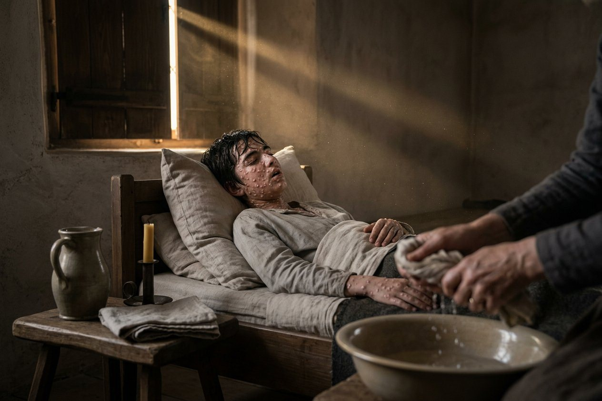
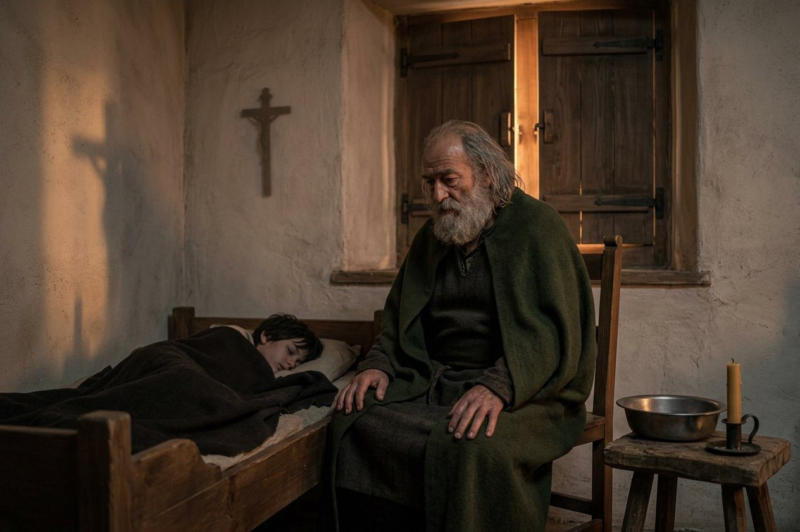
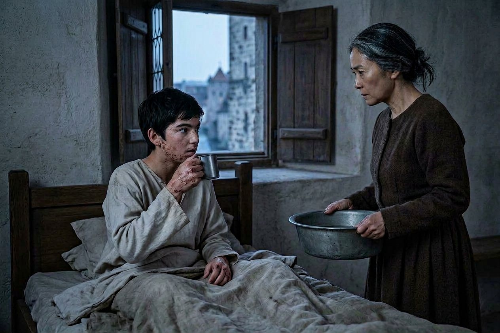
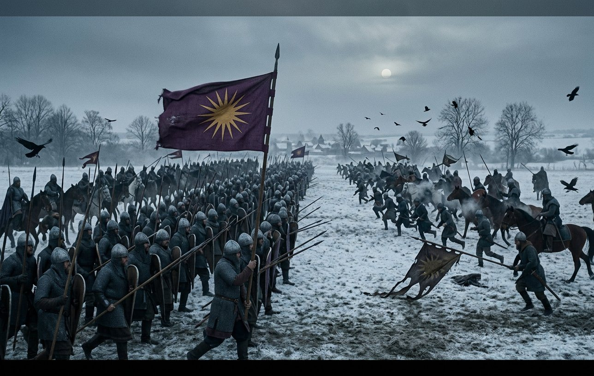
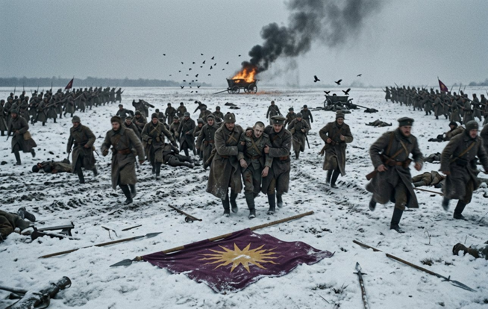
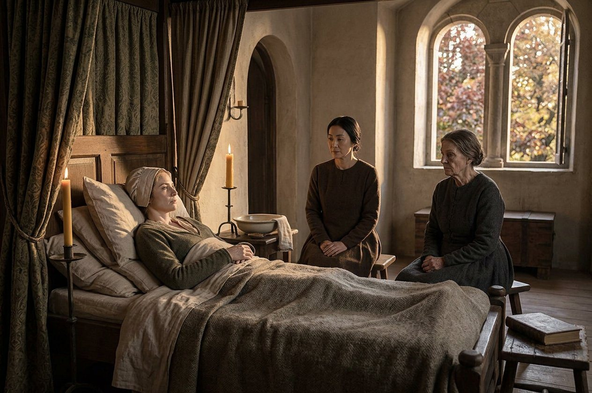
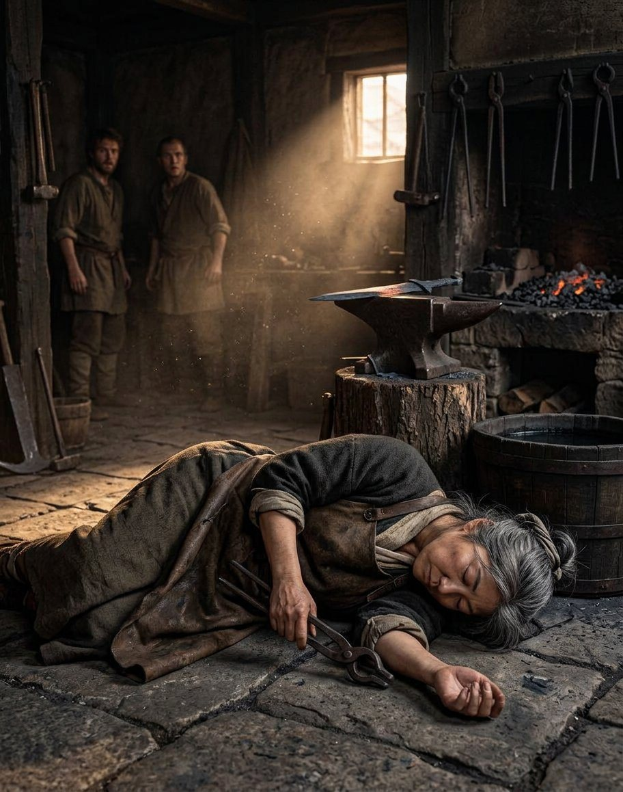
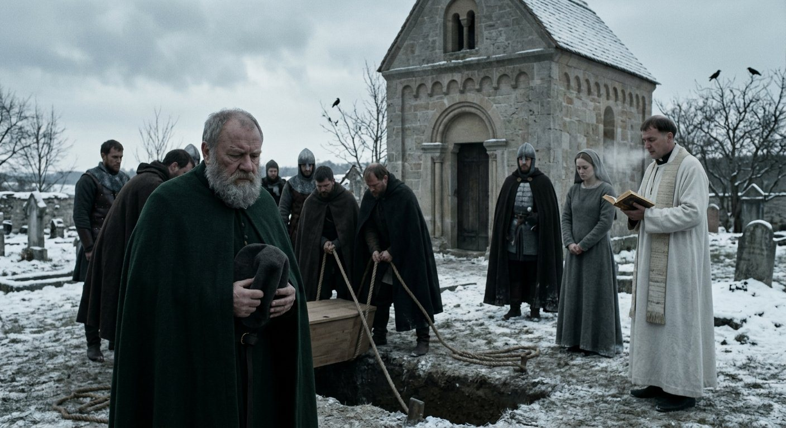
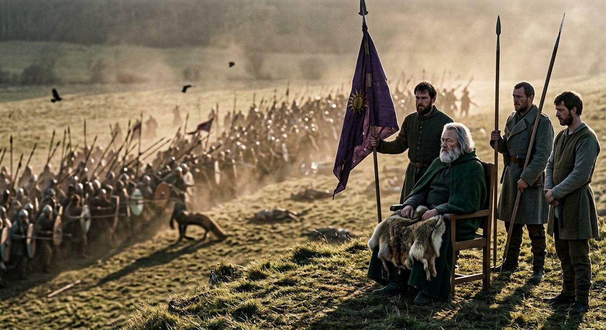
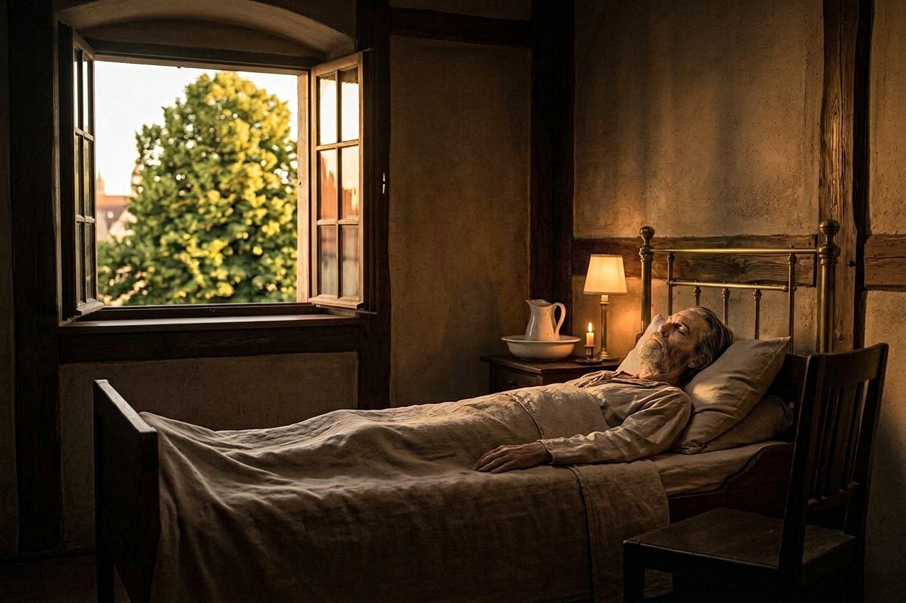

The ninth day of the third month of 919
On the ninth day of the third month of 919, Antiphates fell ill.
He was sixteen years and four months old. He had been a grown man in the eyes of the realm for eleven months, he had two guardians and a reputation, and on the ninth day of the third month he woke with a fever and a headache and by the evening there were spots in his mouth.
I knew what it was before I saw his face and I did not say it that night, because a physician who names a thing out loud in a household like that one has started something she cannot stop.
By the eleventh day the rash was out: the face, the palms, the soles of the feet, the inside of the mouth. Smallpox. I have seen it eleven times in thirty-four years and I have never once been wrong about it and I have never once been able to do anything about it.

I want to put down what a physician actually is in this book, here, at the end of it, because I have been described for thirty chapters as a person who changed the arithmetic of a battle and the reader is owed the other half.
I can set a bone and take off a limb and stop a bleeding and read a fever. I can tell a wound that will kill a man from one that will not, which is worth more than any drug I have ever carried, and I can keep a man alive through a bad night with water and a cloth and my own stubbornness.
And there is a whole country of medicine on the other side of that, where the thing is inside the blood and there is nothing in my chest that touches it. Smallpox is on the other side. It has always been on the other side. Everything I did for Antiphates of Bavaria in the spring of 919, a woman in Silistra with a bucket and a clean cloth could have done, and several of them did.
The house with the shutters closed
The household closed. That is the first thing and it is the thing that no chronicle writes: the shutters were shut on the south side, the servants who had not had it were kept out of the corridor, and the four of us who had had it — I had it at nine, in a port on the Inland Sea, and I carry the marks still on my left arm where a woman I do not remember put her hands — the four of us did the nursing.
Raina was in the room from the first day and stayed in it. She was forty-six. She had not had it, so far as anybody knew, and I told her what that meant in plain words on the second night, and she said: then I will have it, and went back in.
She did not catch it. I have no explanation for that either and I have stopped offering explanations.
The King was sixty-eight and had had it, in Macedonia, before any of this began, and he came in on the third day and did not leave the house for eleven weeks.

I have written in this book about a year in a bed in 911 and I wrote it from the outside, from the foot of it, doing the ordering. I have never written about being inside the illness, and I find that I cannot do it now without the whole of the rest of this chapter becoming about me, so I will give the reader the four facts and then get out of the room.
The first is that a boy of sixteen with smallpox is not a prince. He is a body with a fever in it and a mouth full of sores, and the dignity of it goes on the second day and does not come back.
The second is that he was frightened, and that he was frightened in the way that clever people are frightened, which is quietly and with questions. He asked me, on the fourth night, whether it would mark him. I said it might. He said: good, and I did not understand him for a year.
The third is that his father sat with him. Not in the antechamber, not at the door — in the chair, with his hands on his knees, for hours, in a room with a stink in it, at sixty-eight years of age, having buried the last of his own generation in the previous autumn.
The fourth is that on the twentieth day of the fourth month he asked me, in the corridor, whether his son would live, and I said I did not know, and he said: I am asking you as a physician and not as a courtier. And I said: as a physician and not as a courtier, I do not know, and I have nothing else to give you, and he put his hand on my shoulder and went back into the room.
The fifth month
By the first day of the fifth month he was dying.
I will write the symptoms because I am the one who saw them and because the record will say only that he was ill. The rash had gone to the confluent kind, which is to say it had run together on the face and the hands so that there was more of it than there was skin. The fever had not broken. He had begun to go in and out, and on the fourth night he did not know me.
On the sixth day of that month I sat in the yard for an hour and did not go back in, and Stoyanka came and sat down beside me and did not say anything, and after a while I said the thing I have never said in this book: that I was going to lose a boy of sixteen and there was nothing in thirty-four years of a trade to put against it but a bucket and a cloth.
And she said: you are not going to lose him. And I said: why. And she said: because his father has not come out of that room in eleven weeks and he is sixty-eight, and one of them is going to give way, and I do not think it will be the boy.
That is not medicine. I have thought about it for a long time and it is not medicine and it turned out to be the truest thing anybody said in that house that spring.
The first day of the fifth month
On the first day of the fifth month of 919, at about the fourth hour, Antiphates of Bavaria was cured.
I am going to write this in the only way I can write it, which is exactly as it happened, and then I am going to say what I think and mark it as mine, because the record says only that the disease was gone and I was in the room.
I was in the room. There was nothing to it. There was no light and no voice and no sign of any kind. The boy was in the deep of it — the seventh day of the confluent rash, four nights of not knowing me, and I had told the household on the previous evening to send for the priest, and he had come and done what he does.
At the fourth hour he woke up. He woke up the way a man wakes from an ordinary sleep, and he said that he was thirsty, and he sat up, and the fever was off him like a hand taken off a shoulder.
I examined him for an hour. The rash was there and the crusts were there and the mouth was still raw, and the fever was gone, and by the evening he had eaten, and on the third day he was out of the bed and on the eighth day he was in the yard.

Now. Here is what I think, and it is marked in the margin as mine and not as the record's.
I do not know what happened and I have refused for eleven weeks to say that I do. I am sixty years old and I have never once in my life seen a thing that I could not account for, and I do not have a god to put this on and I am not going to borrow one now.
What I will write is three facts and let the reader do it.
The first is that the fever went in a night, which is not how smallpox goes. Smallpox does not go in a night. It goes over ten days, and the going is visible, and a physician can see it happening and count it.
The second is that the record, when it came to be written, used the word *cured*, and put beside the King's name the words *miracle worker*, and the household said the boy's father had prayed him out of it, and I was in the corridor and heard what I heard and it was not a prayer.
The third is that I do not know, and that the woman who does not know is the one who was holding his wrist at the fourth hour, and the people who are certain are the ones who were not in the room.
That is the whole of it. The boy lived. He is seventeen and he has the marks on his face and his hands and he asked me on the fourth night whether it would mark him and I said it might and he said: good. I never asked him what he meant and I am not going to, and after this page the book is not mine and the asking is somebody else's.
The last page in my hand
I am to stop here. I have argued about it and I have been overruled by a decision of my own that I made in the fourth month of this year and cannot now improve on, which is that this history should change hands at the miracle and not at the funeral, because a woman writing her own death is a spectacle and a woman handing over a ledger in a yard is an ordinary thing that happens in companies.
Laurentios will write the rest. He was one of the eight who went to Rome in 908 and he is sixty-one and he has been in this company twenty-two years, and he can write, which is more than can be said for most of the people who have been in this book.
Three things before I put the pen down and they are all about the book and none of them is about me.
First. I have kept this ledger for nine years and nobody has checked a line of it since Chrysogonos died. Everything from the third day of the ninth month of 916 is my word and there is no longer a man or woman alive who can contradict it. I have tried in those years to write the things that could be checked, and the arithmetic is all in the columns and the columns are honest.
Second. The five Greeks who came into this company at Constantinople in the ninth month of 879 were Evanthia, Eupraxia, Hippostrate, Ioanna and Chrysogonos, and I was not one of them, and I have written all five of them out and I am the only person left who could. Eupraxia is alive in Rome. The other four are dead. If a scholar in a hundred years wants to know whether any of it is true, that is the answer: four dead and one in Rome and a smith's word for the rest.
Third. The columns are the columns and a man's pay is not a favour. Pramda said that to me at a gate in the snow in the twelfth month of 910 and I have not written it down in nine years because it was mine to keep, and I am putting it in now on the last page, where it will be printed, because a thing that is worth keeping ought at the end to be given away.
*Here ends the seventh chapter of the fourth volume, and with this line the hand changes, at Regensburg in the fifth month of the year of grace 919. — Matako of the company, born in the port of Sakai in 859, physician and smith, who kept this ledger from the first day of the twelfth month of 910 to this page.*
Laurentios
My name is Laurentios. I was born in 858 in a village above the Gulf of Corinth and I have been in this company since the eleventh month of 897, which is twenty-two years, and I went to Rome with the eight in 908 and I have been in the second rank of a great many battles and I have never commanded anything.
I am not Matako and this is not going to be written the way she wrote it. She kept the columns; I carried a spear and then a banner and then a spear again. What I can do is say what happened and put the number in and not decorate it, and if the reader wanted the other thing, the other thing stops at the page before this one and I am sorry for it.
She gave me the board on the twenty-second day of the fifth month of 919, in the yard, in front of nine people, and said: the columns are the columns. Then she said: mind the strap. And then she went and had her dinner, which is the whole of what she thought of a ceremony.
I have kept it since. I write a worse hand than she did and I spell the German names the way they are said, and I have not altered anything she wrote except to finish it.
Thüringia
On the first day of the fifth month of 919, the day the boy was cured and the day the ledger changed hands, the Kingdom of Bavaria declared war on Thüringia, and the enemy was Karl of East Francia.
I want the reader to see those two things on one date, because the record has them on one date and because it is the whole of this kingdom in one line: on the morning that a boy of sixteen sat up in a bed with the fever off him, the crown declared its fifth war in five years.
Matako would have made something of that. I will put the dates in and leave the ornament to the reader.
The war ran from the fifth month of 919 to the summer of 920 and had four battles in it and I was at three of them. The King was at two.
Beichlingen, the sixth day of the first month of 920
At Beichlingen, on the sixth day of the first month of 920, three thousand nine hundred and twenty-seven of ours met four thousand one hundred and sixteen of Karl's, and we lost a hundred and thirteen men and they lost two thousand one hundred and sixty-two.
That is a victory and it is the largest army the Kingdom of Bavaria had ever put in the field. Six years earlier this company had been two thousand men and a contract, and at Beichlingen it fielded four thousand and destroyed four thousand, and the difference is not courage and it is not the King. It is pay. It is nine years of being paid on time, in a country where nobody else was.

The King was not there. He was sixty-nine and it was the first month of the year and he was at Regensburg, and the army was commanded by men whose names the record does not give, and I have looked, and I am not going to invent commanders for a battle I did not see.
Marburg, the first day of the second month of 920
At Marburg, on the first day of the second month of 920, one thousand five hundred and five of ours met two thousand six hundred and eight of Karl's, and we lost five hundred and seventy-eight men and they lost a hundred and ninety-seven.
We lost.
I am going to write that plainly because it is the only time it happens in this history. In thirty-four years and in every war in this book, that is the one battle the Kingdom of Bavaria lost, and it was lost in the second month of 920 by a detachment a third the size of the enemy's, which had no business being where it was.

I was there. I will tell the reader what I saw and it is not a story about a general: it is a story about eleven hundred men standing in a field in the snow being shot at from three sides by twice their number, and the order to fall back coming late, and the order to run never coming at all, which in the end is what saved four hundred of us.
I have read the note Matako would have written and it would have been about the arithmetic. The arithmetic is: five hundred and seventy-eight men, in one afternoon, in a war that was already won in the field two months earlier, in a country that was not ours, for a reason no one has ever told me.
We buried what we could find. It took two days. The ground was frozen and we did not have the tools and in the end we used a fire to soften it, and I have never in my life been so cold or so angry, and I am sixty-one years old and I have been in this trade since I was nineteen.
Lauterbach, the first day of the third month of 920
Four weeks later, at Lauterbach, two thousand six hundred and thirty-two of ours met two thousand six hundred and eight of Karl's and lost sixty-five men and destroyed the whole of his army.
Two thousand six hundred and eight destroyed. It is the same army that beat us at Marburg, six weeks later, and it ceased to exist.
I have set those two entries beside each other and I have nothing to add to them. A company that loses five hundred and seventy-eight at Marburg and sixty-five at Lauterbach six weeks later is not a company that has learned anything. It is a company that was unlucky once and then was not.
Mudra, the thirteenth day of the tenth month of 919
Mudra died on the thirteenth day of the tenth month of 919, of the cancer she had carried for two years, at forty-four.
She came into this company at Krassó in the fourth month of 902, when she was twenty-seven, and the record's three words for her are beautiful, chaste and an astute intellectual, and she was all three and nobody who knew her used any of those words about her.
She was the mother of Timostrate, who was born on the twentieth day of the eleventh month of 904 and who was fifteen in the autumn of 919 and who was not in the room.

She walked to Rome. In 908, at thirty-three, in the eight, over the Alps and back, and she came home and did not talk about it, and it is the thing she asked to be remembered by and I am putting it in the book because Matako cannot.
I nursed her at the end and so did Yehudis, who is sixty-six now and has been at this since 885 and who has seen more of the inside of this company than any of us. There is nothing in a cancer ward that changes. What I will write is that she was clear to the last week and that in the last week she asked after the boy who had had the smallpox and was told he was well and said: good, he is the one that matters, and then she slept.
She was buried in the town. The King came to the grave and stood at the back of it and did not speak, and there were about forty of us there, and of the eight who walked to Rome in 908 there were two left in the company that autumn: Matako and I.
Matako, the sixteenth day of the tenth month of 919
Three days later, on the sixteenth day of the tenth month of 919, Matako died of a heart attack. She was in the forge, in the afternoon, with a piece of work in her hands, and she was dead before she was on the ground.
The record files the King's memory of that death under two words, *friend death*, and it is the second time the record has used that phrase and I have set them beside each other and I will say what I think of it at the end of this page.

I have to write the death of the woman who wrote the six chapters before this one, and I have put off writing this page for eight months, and I am going to do it badly.
She was the best company clerk this history ever had and she was a smith who could shoe a horse in three currencies' worth of iron and she was a physician who kept more men alive than any officer in the book. She was in the company thirty-nine years. She made the irons that held Dehanagadevi in 879 and she struck them off in 888 and she wrote both pages herself in the tenth chapter, and if the reader wants to know what kind of person this was, that is the answer: the same hands, both times.
She was not kind. I want that in the book, because the chapters she wrote are so careful that a reader might take her for gentle, and she was not: she was exact, and she had a temper she kept in a box, and she had decided at some point in the eighties that the only thing worth doing in a company was to keep the count right, and she did it for forty years and it killed her in a forge at sixty.
Sixty. And here is a thing I have to write and cannot resolve, and I am going to set it down as it stands and invent nothing.
The record gives her age at death as sixty-nine. The company's own roll, in her own hand, has her born in the port of Sakai in the year 859, which makes her sixty. I have checked the roll twice and it is in three places and it says 859 in all of them. The record says sixty-nine.
One of those two numbers is wrong and I do not know which, and everybody who could have told me is dead, and the woman herself is lying in a churchyard at Regensburg with the office said over her by Yehudis. So the book prints both. If she is looking at this from wherever she is, she will be furious about the arithmetic and she will be right, and she would rather have the argument than the silence.
The office was said by Yehudis, who had been her friend for thirty-four years. There were two hundred people at the grave, which for a smith is a great many, and eight of them were Bavarian lords who had never met her and came because the King was there, and I am naming that because she would have named it. And with that grave I am the last of the eight who walked to Rome in 908.
The King stood at the front. He did not speak and he did not weep and he was sixty-nine years old and in the ninth month of his last year, and when it was finished he took the board out of my hands — the ledger, in its strap — and stood with it for a while, and then gave it back and said: mind the strap.
Shiina, the fifteenth day of the first month of 920
On the fifteenth day of the first month of 920, Shiina the Noble died of old age at Regensburg. He was seventy-five. He had been in this company fifty-three years.
The record files the King's memory of that death under three words: *best friend died*.

I did not know him well and I am not the man to write him. He came out of the far north in 866 with a Nivkh name and a noble's manners and he was the second of the two who were already there when the boy came off the beach, and there are now four people alive in this world who know what that sentence means and none of them is in this company.
He taught. That is what I know about him and it is enough: he taught the Captain to read a language nobody in Europe could read, and then he taught the Captain's son, and the record's phrase for the education of the King of Bavaria's heir is a Confucian one, and there was exactly one man in the country who could have given it.
The King was at the grave. He was sixty-nine years old in the first month of 920 and he had buried his two oldest friends and his physician in the previous fourteen months, and he stood at that grave for a long time with his hat in his hands, and what he said to me afterwards was: that is the last of the ones who were there before me.
The holy war
On the fifteenth day of the fourth month of 920, Friedrich the Forgetful declared a holy war for the Kingdom of East Francia.
A holy war is not a war with more men in it. It is a war that a church has declared, which means that the men in it are fighting for a thing that cannot be negotiated and that a peace made in the field does not end it. The King of Bavaria was the defender. He was sixty-nine, he had been ill in the previous spring and had a cough that had never gone, and he was the defender in a holy war, and that war passed to his son.
I want to put that down plainly because it is the last thing in this book that the King of Bavaria was handed, and it is not a county.
Gleichenstein, the twenty-first day of the fifth month of 920
On the first day of the fifth month of 920 the King fell ill. The record says so in one line and gives no more, and I nursed him for the first four days of it and it was a fever with a cough in it, and on the fifth day he got up and put his cloak on.
He fought at Gleichenstein on the twenty-first day of the fifth month of 920 with five thousand and sixty-one men against three thousand and eighty-eight, and lost a hundred and eighty to twelve hundred and forty, and it was the last battle of his life.

He was not in the line. He was on the rise behind it in a chair, because he could not stand for the length of it, and there were four men of the household around the chair and one of them held the standard and I was one of the four.
I have thought a great deal about what to write here and I have decided that the honest thing is the small thing. He did not make a speech. He watched the line go forward and he said, after a while, in the flat voice of a man reading off a list: that is five thousand men. And then: we were four hundred once.
That is all. The battle was won. It took the afternoon and it was never in doubt after the first hour, and a man who could not stand watched it from a chair and did the arithmetic, and the arithmetic was the thing he had been doing since 866.
The twenty-eighth day of the sixth month of 920
He was ill from the fifth day of the fifth month and he did not get up again after Gleichenstein.
I am going to give the reader the four things I know and not a deathbed scene, because I was in it and I will not sell it.
The first is that it was the illness and not a wound and not old age and that the record says only *ill*.
The second is that his wife was there, and Antiphates, and two of the Greeks of the household, and me, and that for the last two days he did not speak, and that on the fourth day before the end he asked for the ledger and I brought it and he did not read it.
The third is that on the twenty-fifth day of the sixth month he said the last complete thing anybody heard him say, and it was to his son, and it was three words, and Antiphates has never told anybody what they were and I have not asked him and I am not going to print a guess. I have kept this book for eleven months and I have had the same trouble with it that Matako had with the Recital at Győr, and the answer is the same: the book does not invent the words of a man who is dying.
The fourth is that he died on the twenty-eighth day of the sixth month of the year of grace 920, of illness, at Regensburg, in a bed, in a room with the shutters open because it was summer, aged sixty-nine.

I closed his eyes. It is the only thing I have ever done for him that was not my trade.
What the record says he was
The record keeps a list of what a man was, and I am going to print the whole of it, because this book has spent four volumes saying that a man is not a list and the list is what will still be there in a hundred years.
*Compassionate. Reckless. Adulterer. Witch.*
*Golden sovereign. Legendary blademaster. Miracle worker. Strategist. Theologian. Architect. Hunter.*
*Prolific pilgrim. Wayfarer. Trailblazer. Veteran adventurer. Knight errant.*
*Conqueror. Detractor of the Caliphate.*
I have read that list twenty times and I would not have written one word of it. A man who was born on a beach in the far east of the world with nothing, who was baptized twice for reasons of contract, who made twelve thousand men a year for thirty years out of a country that never once liked him, is not a *golden sovereign* and is not a *detractor of the caliphate*. He is a Greek who was better at being patient than anybody he ever met.
But it is the record's list and it is what the chanceries of Europe will copy, and the two words in it that I would keep are the ones the bishops would burn: *adulterer* and *witch*. He was the first. He was not the second, and if he was, then the miracle at the bedside of his son in the fifth month of 919 is the only evidence in this book and I was not in the room and the woman who was is dead.
At his death he held the Kingdom and the Duchy of Bavaria and twelve counties of his own, and he had twenty-nine direct vassals, and among them were six of his sons: Lysistratos, Lealdo, Philotas, Euthykrates, Demetrios and Edouinos. Two of those six are boys of five and three. One of them is a bastard of the record's own word and holds two counties of Moravia. One of them is a Greek name in a German household and holds Steyermark and has never seen it.
And the eldest, who was eighteen, and who had been given nothing, held a kingdom.
What the record does not say
Here is the thing I have to write and cannot.
The war with Thüringia ended in the summer of 920, in the weeks after he died. Between the first day of the sixth month and the first day of the seventh the realm went from eighty-three counties to eighty-eight, and Elisabeth of Thüringia and a man called Kleandros of Goslar came in as vassals, and the war was over.
The record does not say whether he knew.
I have been through it nine times. There is no line, no memory, no word in a chancery, and Antiphates was eighteen years old and in a room with his father dying and would not have been told a thing about a county in Thüringia, and the men who would have known are dead.
So the book does not decide it. Not because the answer does not matter — it matters more than anything else in the last two pages of this volume — but because the only way to decide it is to make it up, and this history has refused to make things up for four volumes and is not going to start on the last page.
I will write what I can see from here, which is what every narrator in this book has done at the end of a chapter and what Matako did nine days before she died.
Sixty-nine years. A wreck on a beach in the far east of the world and a chest of books; four years in the Chang'an trade; three hundred men and a contract at Constantinople at thirty-three; thirty-nine years of a company that was never wanted in a country that paid it; a crown taken at fifty-seven from a man in irons; twelve counties at his death and eighty-eight counties in his realm and a standard with a sun on it that will be on a wall somewhere in Bavaria for as long as there is a Bavaria.
He was only ever tolerated. That is the sentence Matako wrote eighteen times and I am writing it once, at the end, where it counts, and I am writing the second half of it too, which she did not live to write: they tolerated him for thirty years and then they buried him at Regensburg with the bishops there, and the bishops stood in the church and said the office over a man they had called a witch, because by 920 the Kingdom of Bavaria was the thing that paid.
His son is eighteen. He has the marks of the smallpox on his face and his hands and he asked his physician, on the fourth night, whether it would mark him, and when she said it might he said: good. He has two guardians and a Confucian education and a reputation, and he inherits a holy war, eighty-eight counties, twenty-nine vassals, six brothers with counties between them and a church that has not forgiven anything. He is not his father. Nobody is. I have watched him for a year and he is cleverer and colder and he is not as great, and he knows it, and he is not going to let the dynasty die.
That is the fifth volume and I am not going to write it. I am sixty-two years old and I have kept this ledger for fourteen months and I have a worse hand than she did and I have not altered anything she wrote except to finish it.
*Here ends the seventh chapter of the fourth volume, and here ends the fourth volume, The Pilgrim, which runs from the boy on the beach at Chupka to the bed at Regensburg where the shutters were open because it was summer. The ledger was kept in that time by Chrysogonos of the company, by Matako of the company, and by Laurentios, who was born above the Gulf of Corinth in 858 and who has written the last nine days of it at Regensburg in the seventh month of the year of grace 920, and who has nobody left to check him either.*